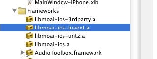
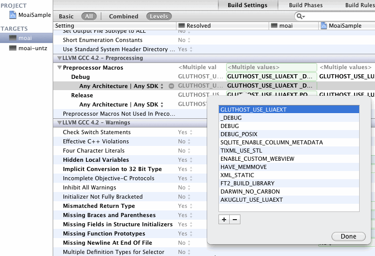

Building Moai From Source With Xcode
Building Moai from Source with Xcode
There are three Xcode projects in the source tree: 'ios', 'osx', and 'libmoai'. Due to a quirk of Xcode 3, you will need to build libmoai indirectly using either 'ios' or 'osx'. This quirk may have been corrected in Xcode 4. Moai definitely can be built under Xcode 4, but Moai does not yet use Xcode 4 for daily builds. A switch is planned soon, as Xcode 3 support is being dropped in iOS 5.0.
The 'ios' project contains the source for the iOS host and a targeting script used to select and run the sample projects. It also contains an external reference to the 'libmoai' project. If you are using Xcode 3, only the products from the external project will show up. If you are using Xcode 4, you should see the entire 'libmoai' projects and its contents inlined in the 'ios' project.
The 'osx' project follows a similar structure to the 'ios' project. Like the 'ios' project there is also an external reference to the 'libmoai' project.
Before building either, take a moment to look at the structure of the 'libmoai' project. If you are using Xcode 3, double click the external reference to open the project; if you are using Xcode 4, you can peruse the project's contents from within the containing project.
The 'libmoai' project has eight targets, each a static library. The 'libmoai' target builds the Moai static library. The 'libmoai-3rdparty' project contains all of the 3rd party code that Moai depends on. The 'libmoai-luaext' project containins the optional Lua extensions available for Moai. The 'libmoai-untz' project contains the Moai framework extension for the Untz sound library.

The source files included in the 'libmoai' project are grouped into the Moai source and the 3rd party libraries. Like the Visual Studio project, all of the 3rd party sources are included for building with the IDE.
The source code under the 'moaicore' group contains the Moai framework and its Lua bindings. The sources under 'uslscore' and 'uslext' are legacy utility libraries on which Moai is partially based. The sources under 'moaiext-luaext' and 'moaiext-untz' are Moai extensions. They implement the Aku host binding API for initializing the Lua extensions and the Untz runtime respectively. The sources under 'moaiext-iphone' are an iOS specific extension that combines C++ and Objective-C to add native iOS features to the Moai framework. These include objects for push notification, in-app purchases and device specific information.
To build for iOS or OSX, use the 'ios' or 'osx' projects. This ensures the project settings are resolved correctly for each platform under Xcode 3.
Building from source steps
Here are the steps for the GitHub project, for Xcode 4.2:
1) Download the latest Moai Beta from GitHub
2) Open the MoaiSample.xcodeproj in the xcode/osx folder
3) Set the active scheme to [ moai - My Mac 32-bit ]  4) [B]uild
4) [B]uild
5) *Click on "moai" in the Project Navigator under MoaiSample/Products
6) *In the Identity and Type window, click the arrow at the end of the Full Path, to open your built executable in the Finder. (The right of the image above) i.e:
/Users/~your name~/Library/Developer/Xcode/DerivedData...
.../MoaiSample-dolieihhalcypohcexopkdpixhis/Build/Products/Debug/moai
7) Make a New Folder "bin", and New sub-Folder "osx", under the moai-sdk ("moai-moai-beta-4d876f4")
8) Move or copy the "moai" executable into "moai-moai-beta-4d876f4/bin/osx"
9) Make/Edit the run.sh file to point towards the moai executable.

- The point of Step 5 & 6 is simply to find your new executable.
Troubleshooting
Socket
If "socket" is not built correctly, this message will show in terminal
module 'socket' not found:
no field package.preload['socket']
no file './socket.lua'
no file '/usr/local/share/lua/5.1/socket.lua'
no file '/usr/local/share/lua/5.1/socket/init.lua'
no file '/usr/local/lib/lua/5.1/socket.lua'
no file '/usr/local/lib/lua/5.1/socket/init.lua'
no file './socket.so'
no file '/usr/local/lib/lua/5.1/socket.so'
no file '/usr/local/lib/lua/5.1/loadall.so'
Fix
1) click MoaiSample
2) Now click on target moai (or moai-untz depends on which you build)
3) click on "Build Settings"
4) Search for "Preprocessor Macros"
5) Choose Debug or Release (or both) for any SDK and add GLUTHOST_USE_LUAEXT
